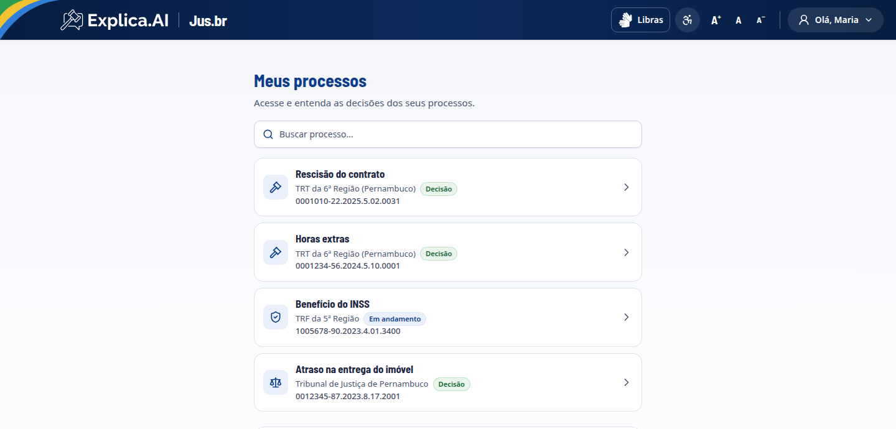
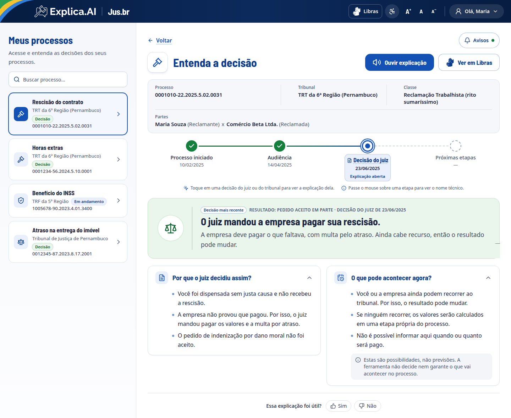
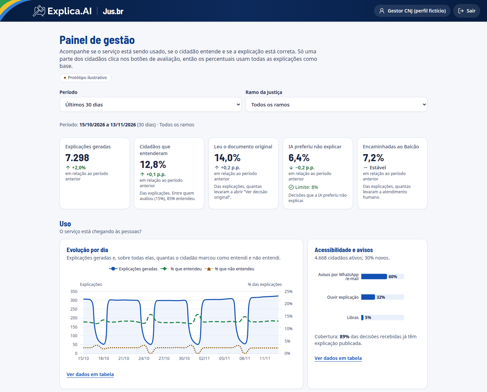

Entenda a decisão.
Sentenças e acórdãos explicados em linguagem simples, para quem mais precisa entender.
A dor
Ter acesso à decisão não é entendê-la.
Encontrar informação sobre o próprio processo já é difícil. E, quando se encontra, ela vem em linguagem jurídica.
O que está no documento
“Julgo parcialmente procedentes os pedidos, resolvendo o mérito nos termos do art. 487, I, do CPC.”
O que o cidadão se pergunta
- Eu ganhei ou perdi?
- O que acontece agora?
- Ainda cabe recurso?
A pergunta que nos guiou
Como podemos fazer com que o cidadão entenda o que foi decidido?
A solução
Uma plataforma nacional que explica a decisão.
- Web e celular, integrada ao Jus.br.
- IA + bases nacionais (DataJud e Codex) para explicar em linguagem simples.
- Entrada pela conta gov.br.
- Qualquer tribunal ou ramo da Justiça, conforme os dados disponíveis.
Escopo: sentenças e acórdãos no protótipo.

Protótipo em ação
Do juridiquês para a conversa.
- 1Linha do tempo com nomes simples e o termo técnico como dica.
- 2O resultado em uma frase, sem culpa nem vermelho.
- 3Por que o juiz decidiu assim.
- 4O que pode acontecer agora, sem prever prazos.
- 5Avalie a explicação: útil ou não.

1 2 3 4 5Quando não dá para explicar com segurança, a IA diz que não sabe.
Sem síntese. Sem chute.
Orienta a ler o original e leva ao atendimento humano (Balcão Virtual do órgão julgador).
Acessível de verdade
A explicação nunca substitui a decisão original e não traz recomendação jurídica.
Diferencial · painel de gestão
Não é só a tela do cidadão.
Quem gere o serviço vê, em um só lugar, se ele funciona:
- Uso: quantas decisões foram explicadas
- Compreensão: o cidadão entendeu?
- Qualidade da IA: erros, correções e custo
- Ações: sugestões automáticas

Indicadores ilustrativos, com dados fictícios.
O que nos diferencia
Linguagem simples
Transforma o juridiquês em uma explicação que qualquer pessoa entende.
Quem escreve não revisa
Um agente redige, outro confere cada frase contra o original.
“Não entendi” é resposta
Na dúvida, não explica e encaminha a uma pessoa.
Acessibilidade nativa
Libras, áudio e fonte ajustável em todas as telas.
Escala por perfis
Um único motor de agentes, com “playbooks” por ramo da Justiça e tipo de ação.
Dois públicos
Tela para o cidadão e painel de indicadores para os tribunais.
Impacto e alinhamento
Agenda 2030 · ONU
Macrodesafio do Judiciário 2027–2032 · Resolução CNJ 692/2026
Comunicação institucional e combate à desinformação
Lei 15.263, de 14/11/2025
Política Nacional de Linguagem Simples
Resolução CNJ nº 615/2025
Uso, desenvolvimento e governança de IA no Judiciário
Acessibilidade
Libras, transcrição em áudio e ajuste do tamanho da fonte
Próximos passos
Dados reais
Integração com DataJud, Codex e Gov.br.
Agentes de IA
Implementação dos agentes simplificador e revisor.
Avisos
Notificação de movimentação por WhatsApp e e-mail.
Mais alcance
- Publicação no Jus.br.
- Divulgação nos portais institucionais dos Tribunais e em plataformas digitais.